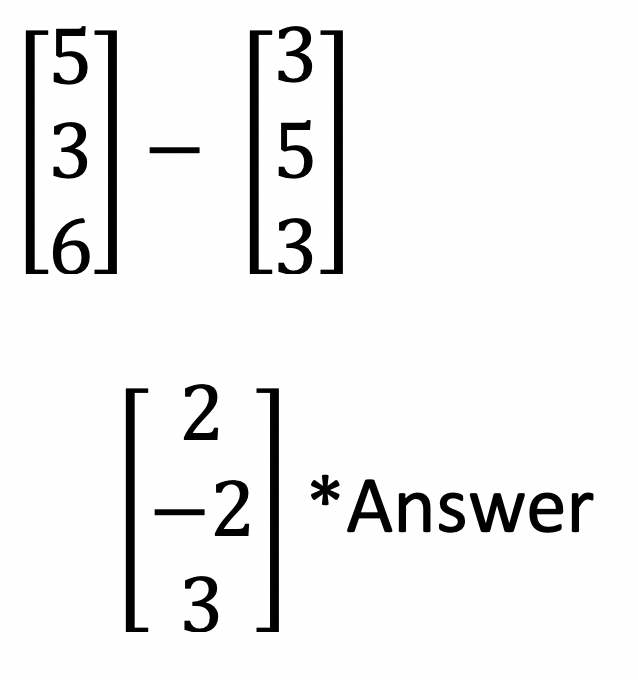
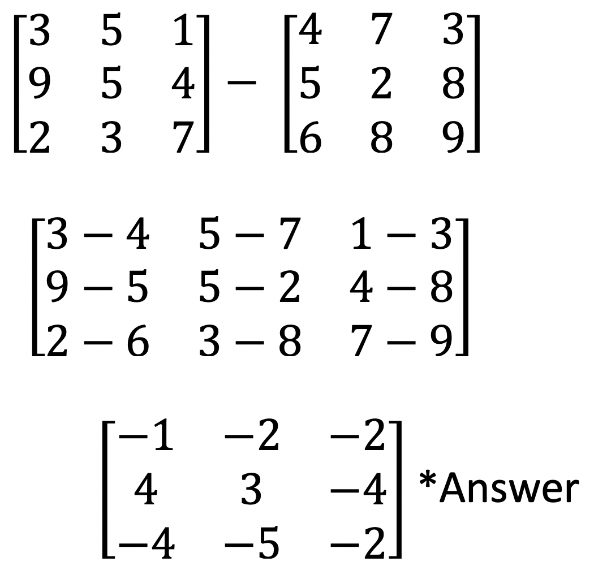
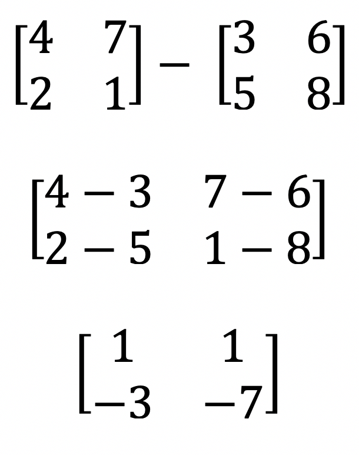
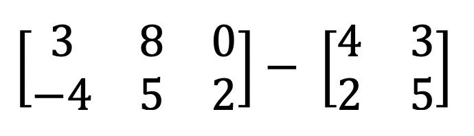

Subtracting matrices is very similar to adding matrices. The only difference is the elements of matrix one is subtracted from it corresponding elements of matrices two. As a result, a third matrix is formed; the answer matrix.
Example 1: Subtract the matrices:

Example 2: Subtract the matrices:

Example 3: Subtract the matrices:

Example 4: Subtract the matrices:

Matrices can only be added or subtracted if they have the same dimensions. For example a 3 x 2 matrix cannot be added OR subtracted with a 2 x 2 matrix.
Therefore this problem cannot be solved.
You can add or subtract a 3 x 2 matrix with another 3x 2 matrix. Or a 2x2 matrix with another 2 x 2 matrix. It's important to memorize this rule, as we learn about multiplying matrices this rule does not apply.